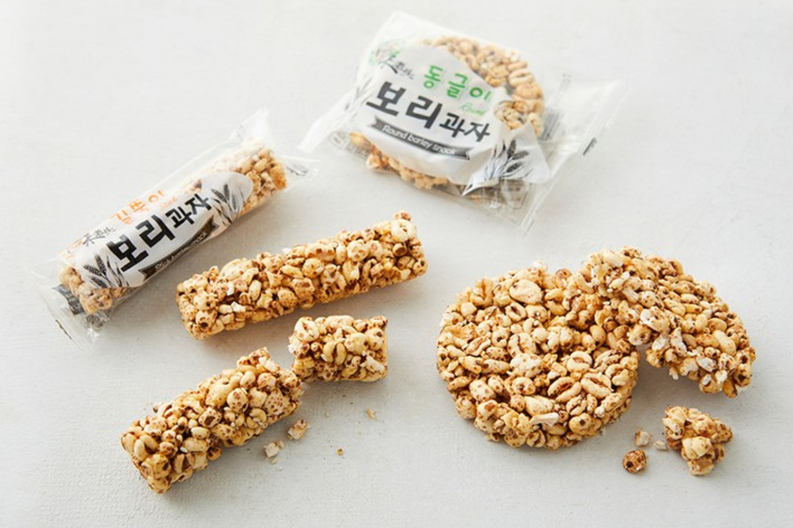

보리과자
보리 풍미의 건빵·쿠키류 — 고소하고 단맛이 약한 한국식 간식 선물.
보리과자는 보리의 고소한 향이 나는 건빵·비스킷·쿠키를 가리킵니다. 청우 발효보리건빵처럼 마트 건빵·국산 코너에 나오거나, 전통 과자·선물 세트에도 섞여 있습니다.
단맛이 세지 않아 차·커피와 잘 어울립니다. 선물용 지퍼팩·상자가 있으면 포장이 편합니다.
보리과자는 보리의 고소한 향이 나는 건빵·비스킷·쿠키를 가리킵니다. 청우 발효보리건빵처럼 마트 건빵·국산 코너에 나오거나, 전통 과자·선물 세트에도 섞여 있습니다.
단맛이 세지 않아 차·커피와 잘 어울립니다. 선물용 지퍼팩·상자가 있으면 포장이 편합니다.
사는 팁
구매 팁 대형마트·백화점 식품관·인사동에서 ‘보리’·건빵으로 찾아보세요. 제품명이 브랜드마다 다릅니다.